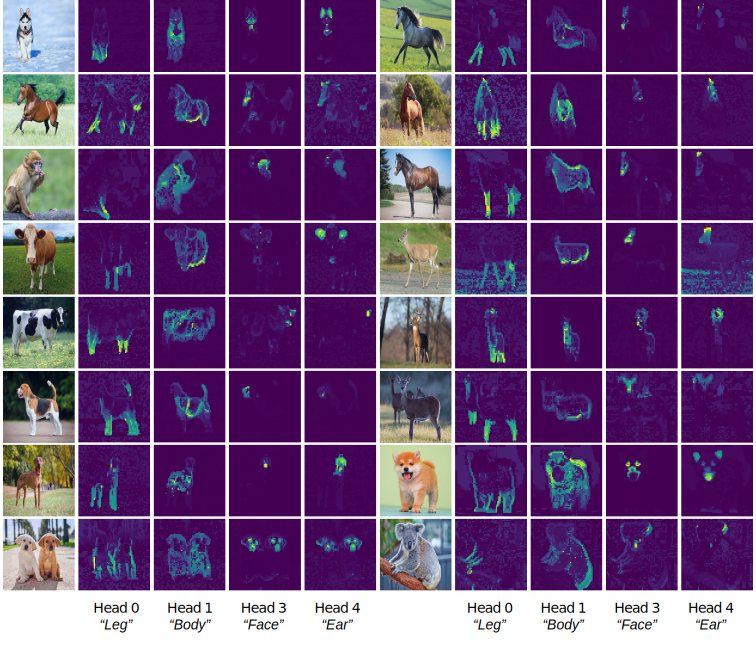

White-Box Transformers via Sparse Rate Reduction
@ NeurIPS 2023 (and more!)
1UC Berkeley
2TTIC
3ShanghaiTech
4NYU
5JHU
6HKU
@article{yu2023white,
title={White-Box Transformers via Sparse Rate Reduction},
author={
Yu, Yaodong and Buchanan, Sam and Pai, Druv
and Chu, Tianzhe and Wu, Ziyang and Tong, Shengbang
and Haeffele, Benjamin D and Ma, Yi
},
journal={arXiv preprint arXiv:2306.01129},
year={2023}
}
@article{yu2023emergence,
title={Emergence of Segmentation with Minimalistic White-Box Transformers},
author={
Yu, Yaodong and Chu, Tianzhe and Tong, Shengbang and Wu, Ziyang
and Pai, Druv and Buchanan, Sam and Ma, Yi
},
journal={arXiv preprint arXiv:2308.16271},
year={2023}
}
TL;DR:
CRATE is a transformer-like architecture which is constructed through first principles and has competitive performance on standard tasks while also enjoying many side benefits.

What is CRATE?
CRATE (Coding RAte reduction TransformEr) is a white-box (mathematically interpretable) transformer architecture, where each layer performs a single step of an alternating minimization algorithm to optimize the sparse rate reduction objective
\[\max_{f}\mathbb{E}_{\mathbf{Z} = f(\mathbf{X})}[\Delta R(\mathbf{Z} \mid \mathbf{U}_{[K]}) - \lambda \|\mathbf{Z}\|_{0}],\]
where the \(\ell^{0}\) norm promotes the sparsity of the final token representations \(\mathbf{Z} = f(\mathbf{X})\). The function \(f\) is defined as
\[f = f^{L} \circ f^{L - 1} \circ \cdots \circ f^{1} \circ f^{0},\]
where \(f^{0}\) is the pre-processing mapping, and \(f^{\ell}\) is the \(\ell^{\mathrm{th}}\)-layer forward mapping that transforms the token distribution to optimize the above sparse rate reduction objective incrementally. More specifically, \(f^{\ell}\) transforms the token representations \(\mathbf{Z}^{\ell}\), which are the representations at the input of the \(\ell^{\mathrm{th}}\) layer, to \(\mathbf{Z}^{\ell + 1}\) via the \(\texttt{MSSA}\) (Multi-Head Subspace Self-Attention) block and the
\(\texttt{ISTA}\) (Iterative Shrinkage-Thresholding Algorithm) block, i.e.,
\[\mathbf{Z}^{\ell + 1} = f^{\ell}(\mathbf{Z}^{\ell}) = \texttt{ISTA}(\mathbf{Z}^{\ell} + \texttt{MSSA}(\mathbf{Z}^{\ell})).\]
Classification
Below, the classification pipeline for CRATE is depicted. It is virtually identical to the popular vision transformer.

We use soft-max cross entropy loss to train on the supervised image classification task. We obtain competitive performance with the usual vision transformer (ViT) trained on classification, with similar scaling behavior, including above 80% top-1 accuracy on ImageNet-1K with 25% of the parameters of ViT.
Segmentation and Object Detection
An interesting phenomenon of CRATE is that even when trained on supervised classification, it learns to segment the input images, with such segmentations being easily recoverable via attention maps, as in the following pipeline (similar to DINO).

Such segmentations were only previously seen in transformer-like architectures using a complex self-supervised training mechanism as in DINO, yet in CRATE, segmentation emerges as a byproduct of supervised classification training. In particular, the model does not obtain any a priori segmentation information at any time. Below, we show some example segmentations.

Another remarkable property is that attention heads in CRATE automatically carry semantic meaning, which implies that CRATE may have post-hoc interpretability for any classification it makes. Below, we visualize the output of some attention heads across several images and several animals, showing that some attention heads correspond to different parts of the animal, and this correspondence is consistent across different animals and different classes of animals.

Acknowledgements
This work is partially supported by the ONR grant N00014-22-1-2102, and the joint Simons Foundation-NSF DMS grant 2031899.
This website template was adapted from Brent Yi's project page for TILTED.